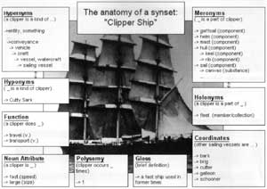
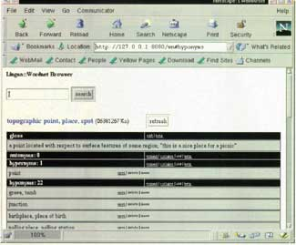

| Packages: |
|
Wordnet 1.6 ........... http://www.cogsci.princeton.edu/~wn/ Lingua::Wordnet 0.3 .............................................. CPAN |
My two-year-old son is just starting to grasp concepts like "A 'car' on the road is different from a 'car' on a railroad track." Computer programs can begin to exhibit this understanding as well; this article discusses the use of the Perl module Lingua::Wordnet to answer questions like "What are some different kinds of cars?" and "What articles of clothing are made from leather?"
Wordnet is a lexical database of the English language organized according to current psycholinguistic theories of human lexical memory. Developed at Princeton's Cognitive Science department in the early 1990s, Wordnet was possibly the first undertaking to produce a machine-interpretable collection of English on a large scale. And like all really helpful and important software projects, it's Open Source and just waiting to be used and extended.1
The Wordnet package consists of several text database files, text indexes for those files, binaries for searching the files, and the source code for those binaries. A brief example can illustrate the functionality of the system:
% wn canary -n1 -hypen
Synonyms/Hypernyms (Ordered by Frequency) of noun canary
Sense 1
fink, snitch, stoolpigeon, stoolie, sneak, canary
=> informer, betrayer, rat, squealer
=> informant, source
=> communicator
=> person, individual, someone, somebody, mortal, human, soul
=> life form, organism, being, living thing
=> entity, something
=> causal agent, cause, causal agency
=> entity, something
This example of the wn program searches for "sense #1" (-n1) of the noun "canary", and displays its hypernyms (which I'll talk about shortly). Entries in the Wordnet databases are called synsets (sets of synonyms); in the case of this entry, "fink", "snitch", "stoolpigeon", "stoolie", "sneak", and "canary" are all considered synonyms for this particular word sense, and thus are displayed as members of the same synset. A synset can then be understood to be all words sharing the same essential meaning. Consequently, the second sense (-n2) of "canary" in Wordnet is that of a "singer", the third refers to the color "canary" or "canary yellow", and the fourth is the bird. The collection of synsets for a given word is equivalent to the entries you might typically find in a dictionary entry, but includes a plethora of other data. This isn't your grandpa's dictionary. It's your grandson's.
A hypernym is the type to which something belongs: a boat is a type of transport, and a fish is a kind of animal. The hierarchy of hypernyms shown above proceeds from the most specific synset to the most general synset: entity, something. You can read this hierarchy as "a fink/canary is an kind of informer, which is a kind of informant, which is a communicator, which is a person, which is a life form; a person is also a causal agent, and both life form and causal agent are kinds of entities."
This hierarchy is generated using word relation pointers between synsets. First, let's look at the index entry for "canary":
canary n 4 3 @ ~ #m 4 0 07263970 07137082 03881697 01055943
I won't describe all the elements of this entry; the only things to note are that it indicates that there are four senses of the word, and the four big numbers are the four offsets of those senses (or synsets) in the data file. Here is the first entry for "canary" in the data file (offset 07263970):
07263970 18 n 06 fink 0 snitch 0 stoolpigeon 0 stoolie 0 sneak 0 canary 1 \ 001 @ 07338772 n 0000 | someone acting as an informer or decoy for the \ police
Look familiar? Besides conjuring memories of the kid who told on me for urinating on the Holiday Inn sauna rocks when I was twelve, it lists the words that belong to the synset, has a pointer to a hypernym at synset 07338772 (preceded with the @), and contains a short gloss (definition) for the word. Consequently, the synset at 07338772 is the "informer" entry we saw listed above directly below "fink...canary". That entry will have a hypernym pointer to the synset below it, and so on. This basic pointer system forms a large network of word relations in Wordnet. The database contains pointer types for many linguistic relationships other than hypernyms; they're depicted in Figure 1. A complete list of pointer and data types is included in the Lingua::Wordnet distribution in docs/terms.txt, and is fully documented in the Wordnet documentation.
Figure 1: Wordnet relationships.

In addition to pointers, the database contains glosses for each synset. The glosses consist of brief dictionary-like definitions, "sentence frames" for verbs to illustrate their basic usage, and other less significant information. Lingua::Wordnet alters these databases to permit additional data types, including "attribute" and "function" pointers for nouns. We will discuss these later. First, let's discuss installation.
The Wordnet distribution stores all of the lexicon information in static text data files, with accompanying index text files to increase lookup speed. The Lingua::Wordnet installation rewrites these files in the Berkeley DB database format, allowing these files to be dynamically edited.2 With this change, users can edit existing synsets, add new synsets, and even create new pointer types. The new files also increase the speed for data retrieval for the indexes, since words are mapped to synsets with a hash, eliminating the need for a manual binary search.
There are many programs on the Wordnet web site, but you'll need only the Unix Database Package (wn16.unix.tar.gz). Lingua::Wordnet does not use the Wordnet programs, so the Unix package should work for any operating system supporting Berkeley DB 1.x. If you install the Wordnet distribution, the Wordnet database files will typically be in /usr/local/wordnet-1.6/dict/. If you unpack (but do not install) the distribution, these files will be in wordnet-1.6/dict. (You can install Lingua::Wordnet without formally installing the Wordnet distribution.)
Figure 2: The HTML interface to Lingua::Wordnet.

To install Lingua::Wordnet, grab the distribution from CPAN, and unpack the files. Prior to installation, the script scripts/convertdb must be run to convert the databases to the new file format. This program will prompt for the location of the dictionary files, as well as the location for the new DB files. It then sorts through the Wordnet index and data files and writes out the new files, requiring approximately forty megabytes. Once the files are converted, you can delete the old files or the entire Wordnet distribution. The standard module installation can then be completed (perl Makefile.PL, make, make test, make install). The module also contains a framework for an HTML web interface for browsing the lexicon under mod_perl, shown in Figure 2. If you manage to extend this to edit Wordnet information, please send me your changes!
Throughout the Lingua::Wordnet module, synsets are represented and manipulated as objects of type Lingua::Wordnet::Synset, with methods that typically return arrays. The simplest use of Lingua::Wordnet is to look up English definitions:
use Lingua::Wordnet;
my $synset;
my $wn = new Lingua::Wordnet;
my @synsets = $wn->lookup_synset("travel", "v");
for $synset (@synsets) {
for ($synset->words) {
print "$_ ";
}
print " - ", $synset->gloss, "\n";
}
Note that the lookup_synset() method actually returns an array of Lingua::Wordnet::Synset objects, which can then be used to call other functions for that individual synset. The second parameter passed to lookup_synset() is the part-of-speech (POS), which in this case is v for "verb". This code will look up all senses of the verb "travel", and print the words of the synset, along with their gloss.3
travel%0 go%0 move%3 locomote%0 - change location; move, travel, ... travel%4 journey%0 - travel as for pleasure and sightseeing; go on travels travel%1 trip%2 jaunt%0 - make a trip for pleasure travel%2 journey%1 - travel upon or across; "travel the oceans" travel%3 - undergo transportation, as in a vehicle
To format this information as a dictionary entry, only the glosses would be used:
my $i = 0;
my $synset;
my @synsets = $wn->lookup_synset("travel", "v");
print "travel, v.: ";
for $synset (@synsets) {
$i++;
print "$i. ", $synset->gloss;
}
print "\n";
This yields:
travel, v: 1. change location; move, travel, or proceed; "How fast does your new car go?" "We traveled from Rome to Naples by bus"; "The policemen went from door to door looking for the suspect";"The soldiers moved towards the city in an attempt to take it before night fell" 2. travel as for pleasure and sightseeing; go on travels 3. make a trip for pleasure 4. travel upon or across; "travel the oceans" 5. undergo transportation, as in a vehicle
But if you only use Wordnet for dictionary lookups, you're missing the reason it was created. Besides, the glosses aren't all that great anyway. Let's talk about some real world applications instead.
Suppose that you were writing a password checker to ensure that user passwords are hard to guess. You could amaze your users by warning them if their new password resembles the old:
old password: sneaker
new password: loafer
Why not pick something other than a shoe this time?
To do this, we first generate two arrays of synsets, one containing all the matching synsets for the first (old password) term, and one containing the matching synsets for the new password:
my @oldsynsets = $wn->lookup_synset("$oldpass", "n");
my @newsynsets = $wn->lookup_synset("$newpass", "n");
To determine the "type" of a given thing, we must know the "hypernyms" of that term. Hypernym relationships in Lingua::Wordnet are represented as object methods, and are called with their name. To construct a list of the hypernyms for the two passwords entered, we loop through all of the hypernyms for all the synsets, pushing their index keys (offsets) onto the @offsets array:
my ($hyper, @offsets);
foreach (@oldsynsets) {
foreach $hyper ($_->hypernyms) {
push (@offsets, $hyper->offset);
}
}
Lastly, we can do the same for the array of new password synsets, and look for a match in their hypernyms. The offset() method returns the key for that synset:
my $hyper;
foreach (@newsynsets) {
foreach $hyper ($_->hypernyms) {
my $offset = $hyper->offset;
if (grep /$offset/, @offsets) {
my $word = ($hyper->words)[0];
$word =~ s/\%\w//;
print "Why not choose something other than a
$word this time?\n";
exit;
}
}
}
Of course, to use this with words other than nouns, it would need to search all four Wordnet parts of speech: noun (n), verb (v), adjective (a), and adverb (r). Also, while you might expect the entries "robin" and "canary" to come back with a clever objection, they won't, because of the detail Wordnet maintains for tiers of hypernyms. For example, a "robin" in Wordnet is a kind of "thrush", which is a kind of "oscine", a type of "passerine", which is a type of "bird". To generalize the hypernyms for our purpose, we could collect an array of all these hypernyms, stopping at a preset level. But There's More Than One Way To Do It.
The Lingua::Wordnet::Analysis module allows synset relationships to be analyzed from a slightly higher level, with methods to traverse trees, compute intersections of arrays of synsets, and scan arrays of synsets for matching entries. We'll see how these methods can enhance our already-clever, highly-useful password checker. But first, a tangent.
The concept of polysemy (or familiarity) in Wordnet is determined by the number of times a word occurs in the Wordnet synsets. The lexicographers at Princeton determined that these occurrence frequencies corresponded closely enough to the familiarity of the human lexicon to equate them for their purposes. Retrieval of this information (the "polysemy count") in Lingua::Wordnet is straightforward:
my $bird = $wn->familiarity("bird", "n");
my $passerine = $wn->familiarity("passerine", "n");
print "The familiarity of 'bird' is $bird.\n";
print "The familiarity of 'passerine' is $passerine.\n";
# outputs:
# The familiarity of 'bird' is 5.
# The familiarity of 'passerine' is 1.
The higher the count, the more likely that the word is the most familiar. The next hypernym above "birds" happens to be "vertebrate" with a polysemy count of 1. By traversing hypernyms and stopping at the hypernym with the highest familiarity, we can make a reliable guess that the hypernym represents the most appropriate category for the clever password checker. Given two synsets and an array of their hypernyms up to the top level, we could compute the intersection of the arrays and choose the resulting synsets with the highest familiarity. Then we could sleep soundly knowing that our system, while completely insecure, is clever. But There's A Better Way To Do It.
To perform this traversal, rather than use a foreach loop or recursive function to collect and compute the hypernym lists, we can use the traverse(), union(), and intersection() methods of Lingua::Wordnet::Analysis. One other method, distance(), will help in determining the best response to the question.
use Lingua::Wordnet;
use Lingua::Wordnet::Analysis;
$wn = new Lingua::Wordnet;
$analysis = new Lingua::Wordnet::Analysis;
print "old password: ";
chomp($oldpass = );
print "new password: ";
chomp($newpass = );
@oldsynsets = $wn->lookup_synset("$oldpass", "n");
@newsynsets = $wn->lookup_synset("$newpass", "n");
As before, we have an array of synset objects for both the old password and the new password. Next, we traverse the hypernyms of the @oldsynsets array, compute their union with those synsets already traversed, and store the results in a new array @oldhypersets. The same is done for the array @newsynsets:
foreach (@oldsynsets) {
@oldhypersets = $analysis->union(@oldhypersets,
$analysis->traverse("hypernyms", $_));
}
foreach (@newsynsets) {
@newhypersets = $analysis->union(@newhypersets,
$analysis->traverse("hypernyms", $_));
}
By placing the traverse() method within the arguments for union(), the need to duplicate arrays is eliminated. Now we have two arrays (@oldhypersets and @newhypersets) which contain the union (that is, it contains no duplicate entries) of all possible hypernyms for any sense of the nouns typed in as the old and new passwords. Now to determine whether these two words' hypernym trees intercept (to see if they share any category in common), we can compute the intersection of the two arrays using references:
@intersection = $analysis->intersection(\@oldhypersets, \@newhypersets);
If we printed out the contents of @intersection now, we would see it contains synset objects common to both @oldhypersets and @newhypersets. However, since all Wordnet hypernym trees have a top level, it is likely that the two entries intersect no matter how different they seem. For example, "chicago" and "book" will have an intersection of synsets "object" and "entity". To determine how applicable the results are, we can use the familiarity() method discussed earlier, as well as the Lingua::Wordnet::Analysis::distance() method. This takes an origin synset, a destination synset, and the pointer type to use as a "path" for the search. For now, we can use the first synset of @oldsynsets for the search, and compute the distance to each synset in our intersected array:
foreach $intersect (@intersection) {
print $intersect->words;
print " - distance: ", $analysis->distance($oldsynsets[0],
$intersect,"hypernyms"), "\n";
}
For old password "sandal" and new password "loafer", this yields: (Spaces between words in Wordnet are replaced with underscores)
artifact%0artefact%0 - distance: 4
covering%0 - distance: 3
object%0physical_object%0 - distance: 5
shoe%0 - distance: 1
entity%0something%0 - distance: 6
footwear%0footgear%0 - distance: 2
The synset with the shortest distance is "shoe", as we had hoped. We can finish the program by finding the shortest distance, checking it for a maximum value, and then outputting the message.
$shortest = 10;
for (@intersection) {
foreach $oldsynset (@oldsynsets) {
$thisdistance = $analysis->distance($oldsynset,
$_, "hypernyms");
next if ($thisdistance < 1);
if ($thisdistance < $shortest) {
$shortest = $thisdistance;
$word = ($_->words)[0];
$word =~ s/\%\w//;
}
}
}
if ($shortest < 5) {
$word =~ s/\_/ /g;
print "Why not choose something other than a
$word this time?\n";
}
The clever password checker will now prompt correctly for the following examples:
old password: girl new password: mother Why not choose something other than a woman this time? old password: robin new password: canary Why not choose something other than an oscine bird this time? old password: germany new password: france Why not choose something other than a European country this time?
If you're wondering why we have a foreach loop to go through all the @oldsynset entries, it's because $oldsynset[0] might not uncover any matches at all. Recall that "canary the bird" was the fourth sense of "canary" in the database, not the first.
So far we have talked about only hypernyms, which are just one of the many linguistic relationships in Wordnet. In addition to analyzing hyponymy relationships (hypernymy/hyponymy, which engineers might prefer to call "subsets" and "supersets", or IS-A relationships), meronymy (the HAS-A relationship) can be examined using the same methods. In many ways, meronymy is significantly more complicated than hyponymy. The Wordnet databases specify three types of meronym relationships:
Lingua::Wordnet creates the databases with the following four additional types, defined in the Wordnet documentation (see 5papers.pdf at the Wordnet web site):
The same objects are used to access these pointer types also. Suppose that you needed a different kind of password utility, but one no less clever. This utility would challenge potential password hackers by offering a kind of twenty questions game. Again, it's not good security, but it is fun.
Now, if we used an advanced parser (like Lingua::LinkParser) we could allow a wide variety of questions to be asked. In this case, the game lends itself well to simply pattern-matching the questions, which we will limit to:
"Are you a(n) NOUN?"
"Are you ADJECTIVE?"
"Do you have NOUN?" or "Are you made from/of NOUN?"
"Do/can you VERB?"
We again load Lingua::Wordnet::Analysis and create the $wn and $analysis objects. First, we initialize and build arrays containing all the hypernyms, attributes, meronyms, and functions that we'll need to answer these questions. Note that we need to add the direct attributes, meronyms, and functions of $password to the arrays, since traverse() will start at the level after $password:
my $password = $wn->lookup_synset("oven", "n", 1);
my (@hypernyms, @attributes, @meronyms, @functions, $i);
@hypernyms = $analysis->traverse("hypernyms", $password);
for (@hypernyms) {
push (@attributes, $_->attributes,
$password->attributes);
push (@meronyms, $_->all_meronyms,
$password->all_meronyms);
push (@functions, $_->functions,
$password->functions);
}
Next, we will loop ten times, input the questions, and match a pattern against them. First, the "Are you a/an ..." question:
for $i (1 .. 10) {
print "$i>";
chomp ($_ = <STDIN>);
if (/are\syou\san*\s(.+)\s*\?/i) {
my $noun = $1;
$noun =~ s/\s+$//; $noun =~ s/\s/\_/g;
my @synsets = $wn->lookup_synset($noun, "n");
my $found = 0; my $synset;
foreach $synset (@synsets) {
if ($synset->offset eq $password->offset) {
print "You guessed it!\n";
exit;
}
if ($analysis->match($synset,@hypernyms)) {
print "Yes.\n";
$found = 1;
last;
}
}
print "No.\n" unless ($found);
}
}
In this block of code, the noun provided by the user is looked up and matched against the @hypernyms array. The $analysis->match does this, telling us whether the word is a hypernym of "oven". The code for the other four questions is identical, with the exception of the actual pattern to match the question, the part-of-speech used to look up the synset, and the array which is used for the match. See Listing 1 for the complete program. Here is how a sample run looks:
1> Are you an animal?
No.
2> Are you a plant?
No.
3> Are you an object?
Yes.
4> Are you food?
No.
5> Are you electrical?
No.
...
10> Are you made from wood?
No.
Sorry, you blew it.
As we can see, the program misled the user at question #5, since an oven is electrical; not all the information that a user will ask is in the Wordnet databases. For this reason, Lingua::Wordnet allows the database to be extended very easily. Since we already will know what the password will be, we can add that information ourselves. The information we add will address those questions that a user is likely to ask.
Before adding information to the databases, it is important to determine the proper location for that information. To define an "oven" as "electric", you might be tempted to create a pointer directly from "oven" to the adjective "electric". However, inheritance of properties is one of the keys to Wordnet's usability. An attribute pointer should be created as high in the lexicon as possible; if we trace the hypernyms upwards from "oven" we get "kitchen appliance", then "home/household appliance", then "appliance", then "consumer durables", and so on. Looking at the glosses for these synsets as well as the hyponyms under each shows that the "electric" pointer should be placed at the "appliances" synset, since all synsets under it are electrical devices. By placing the pointer at this synset, we eliminate the need to duplicate it in the synsets below.
To write to the database, we must first unlock it and have write permissions to it. The following code will add pointers to their appropriate locations: (If you're wondering which is the easiest way to lookup the correct sense numbers for synsets, I recommend writing a text-based browser and sending it to me. Or you can just use the LWBrowser.pm mod_perl Apache module.)
# The '2' and '1' in the lookup_synset() parameters specify the
# sense number of the word.
my $appliance = $wn->lookup_synset("appliance", "n", 2);
my $oven = $wn->lookup_synset("oven", "n", 1);
my $electrical = $wn->lookup_synset("electrical", "a", 2);
my $prepare = $wn->lookup_synset("prepare", "v", 2);
my $kitchen_ap = $wn->lookup_synset("kitchen_appliance", "n", 1);
my $bake = $wn->lookup_synset("bake", "v", 1);
# Allow writing to the databases
$wn->unlock;
# create the pointers
$appliance->add_attributes($electrical);
$kitchen_ap->add_functions($prepare);
$oven->add_functions($bake);
# write the entries
$appliance->write;
$oven->write;
$kitchen_ap->write;
$wn->lock;
It is important to note that while a verb function like "prepare" does not immediately seem to connote "food preparation", this synset in fact refers to exactly that; the complete synset contains the words "cook, fix, ready, make, prepare". Remember that Wordnet already includes many concepts that you might be inclined to add yourself.
We could continue adding pointers like part meronyms to "oven" for "door", "window", "dial", and "rack", since the "oven" synset doesn't already have them, and they are typical of ovens. For now, let's see how the game would turn out with the new lexicon entries:
1> Are you an animal?
No.
2> Are you a plant?
No.
3> Are you an object?
Yes.
4> Are you food?
No.
5> Are you electrical?
Yes.
6> Are you an appliance?
Yes.
7> Can you cook?
Yes.
8> Do you bake?
Yes.
9> Are you an oven?
You guessed it!
Granted, we supplied all of that information to Wordnet beforehand. But as this simple application shows, the flexibility of Lingua::Wordnet allows it to grow in usefulness and power the more it is expanded. One more example of this program will illustrate the point. Let's finish our lexical feast by adding synset pointers for "oreo". This time we will add meronyms to describe the ingredients of my favorite cookie, and add a hypernym for "dessert".(A synset can have multiple hypernyms. In fact, adding proper hypernyms to a synset can dramatically increase the inherited properties of that synset.)
my $oreo = $wn->lookup_synset("oreo", "n", 1);
my $cream = $wn->lookup_synset("cream", "n", 2);
my $sugar = $wn->lookup_synset("sugar", "n", 1);
my $cake = $wn->lookup_synset("cake", "n", 2);
my $chocolate = $wn->lookup_synset("chocolate", "a", 1);
my $cocoa = $wn->lookup_synset("cocoa", "n", 2);
my $dessert = $wn->lookup_synset("dessert", "n", 1);
my $filling = $wn->lookup_synset("filling", "n", 3);
my $yummy = $wn->lookup_synset("yummy", "a", 1);
my $nourish = $wn->lookup_synset("nourish", "v", 2);
$oreo->add_attributes($yummy);
$oreo->add_part_meronyms($cream);
$oreo->add_part_meronyms($filling);
$oreo->add_stuff_meronyms($cocoa);
$orem->add_hypernym($dessert);
$oreo->add_attributes($chocolate);
$orem->add_attributes($yummy); # not quite concise
$oreo->add_functions($nourish); # a big stretch
Since the 10questions.pl program performs meronym lookups with the all_meronyms() method, both part and stuff meronyms will be included, and generalize well enough to answer the "Do you have ..." and "Are you made from ..." questions.
In addition to the hierarchical organization of synsets, Lingua::Wordnet has other useful methods, including basic morphology, antonym lookups, and verb entailments:
# prints "heavy"
$word = $wn->morph("heaviest", "a");
print "$word\n";
# prints "light%1"
$heavy = $wn->lookup_synset($word, "a", 1);
print (($heavy->antonyms)[0]->words);
# prints "buy%0purchase%0"
$shop = $wn->lookup_synset("shop", "v", 1);
print (($shop->entailment)[0]->words);
# a makeshift thesaurus ... er, "similar-thingies-aurus"
@coordinates = $analysis->coordinates($thesaurus);
The examples here demonstrate functionality, not philosophy. If lexical processing interests you, I highly recommend reading all the materials on the Wordnet web site, and especially the "5 Papers" document. The researchers at Princeton have given the Open Source community a comprehensive tool which can greatly benefit AI, search technology, and linguistic applications. It was my motivation for Lingua::Wordnet that any weaknesses resulting from static data could be remedied to the user's specification. Lastly, if you significantly expand the Wordnet databases, please let me know. I plan on setting up a repository of expanded files in the near future.
_ _END_ _
Dan takes some pleasure in knowing that the guy who ratted on him is now a cage dancer somewhere in L.A. What Dan doesn't know is that the guy makes a whole lot more than he does. Tell him so at dbrian@brians.org.